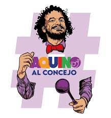

Unete a nuestra comunidad
Aquino@ejemplo.correo
AQUINOTICIAS
Inicio
Conoce a Aquino
Candidatura
Movimientos
Contactos
Prensa
Inicio
Conoce a Aquino
Candidatura
Movimientos
Contactos
Prensa
Unete a nuestra comunidad
Aquino@ejemplo.correo
AQUINO
Candidato al Concejo de Medellin
Soy Aquino
Soy
Jose Luis Marín,
quizás me conoces como
Aquino,
Abogado y candidato a Magister en Derecho y Sociedad en mi amada universidad de Antioquia,
Hace 17 años trabajo,
con sectores sociales y populares de
Medellín.
